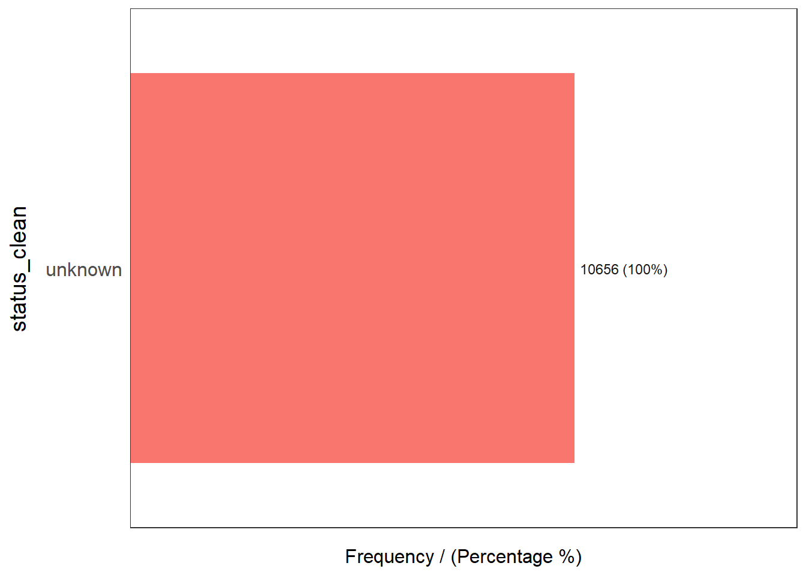

pacman::p_load(maptools, sf, raster, spatstat, tmap, tidyverse, funModeling)Take Home Exercise 1
Overview
Setting the Scene
Important
This context is taken from the IS415 Take Home Exercise 1
All rights belong to Dr Kam Tin Seong.
Water is an important resource to mankind. Clean and accessible water is critical to human health. It provides a healthy environment, a sustainable economy, reduces poverty and ensures peace and security. Yet over 40% of the global population does not have access to sufficient clean water. By 2025, 1.8 billion people will be living in countries or regions with absolute water scarcity, according to UN-Water. The lack of water poses a major threat to several sectors, including food security. Agriculture uses about 70% of the world’s accessible freshwater.
Developing countries are most affected by water shortages and poor water quality. Up to 80% of illnesses in the developing world are linked to inadequate water and sanitation. Despite technological advancement, providing clean water to the rural community is still a major development issues in many countries globally, especially countries in the Africa continent.
To address the issue of providing clean and sustainable water supply to the rural community, a global Water Point Data Exchange (WPdx) project has been initiated. The main aim of this initiative is to collect water point related data from rural areas at the water point or small water scheme level and share the data via WPdx Data Repository, a cloud-based data library. What is so special of this project is that data are collected based on WPDx Data Standard.
Objectives
Important
This Objectives are taken from the IS415 Take Home Exercise 1
All rights belong to Dr Kam Tin Seong.
Exploratory Spatial Data Analysis
Derive kernel density maps of functional and non-functional water points. Using appropriate tmap functions,
Display the kernel density maps on openstreetmap of Osub State, Nigeria.
Describe the spatial patterns revealed by the kernel density maps. Highlight the advantage of kernel density map over point map.
Second-Order Spatial Point Patterns Analysis
With reference to the spatial point patterns observed in ESDA:
Formulate the null hypothesis and alternative hypothesis and select the confidence level.
Perform the test by using appropriate Second order spatial point patterns analysis technique.
With reference to the analysis results, draw statistical conclusions.
Spatial Correlation Analysis
In this section, you are required to confirm statistically if the spatial distribution of functional and non-functional water points are independent from each other.
Formulate the null hypothesis and alternative hypothesis and select the confidence level.
Perform the test by using appropriate Second order spatial point patterns analysis technique.
With reference to the analysis results, draw statistical conclusions.
Setup
Packages
sf: used for importing, managing, and processing geospatial data
tidyverse: for performing data science tasks such as importing, wrangling and visualising data.
tmap: used for creating thematic maps, such as choropleth and bubble maps
spatstat: used for point pattern analysis
raster: reads, writes, manipulates, analyses and models gridded spatial data (i.e. raster-based geographical data)
maptools: a set of tools for manipulating geographic data
funModeling: contains a set of functions related to exploratory data analysis, data preparation, and model performance
Installing and Loading the Packages
The code chunk below will be used to install and load these packages in RStudio.
This prepares all the tools necessary for us to start or spatial analysis.
Dataset used
2 datasets are used for this excercise
The First Dataset used would be the Level 2 Administrative Boundary which can be found either from Geoboundaries or Humanitarian Data Exchange
Waterpoint Data Repositories is the dataset for the waterpoint
Handling the Geospatial Data
Importing Geospatial Dataframe
Note
Need to double check the CRS as it is depending on the system used by the country.
Since the country we are focusing on is Nigeria. The EPSG code is 26392., and it encompasses the entire area of Nigeria.
We will be using the st_read() function from the sf package to read the data set. More information on st_read() can be found here..
However, as the polygon data is not in the correct format, there will be a need to convert the geometric data to the correct form. st_transform from the sf package is used to so. More information on st_transform() can be found here
geoBoundaries data set
This dataset loads the boundaries of Nigeria from geoBoundaries
geoNGA <- st_read("data/geospatial/",
layer = "geoBoundaries-NGA-ADM2") %>%
st_transform(crs = 26392)Reading layer `geoBoundaries-NGA-ADM2' from data source
`C:\hxchen-2019\birdie\lessons\Take-home\Take-home_ex1\data\geospatial'
using driver `ESRI Shapefile'
Simple feature collection with 774 features and 6 fields
Geometry type: MULTIPOLYGON
Dimension: XY
Bounding box: xmin: 2.668534 ymin: 4.273007 xmax: 14.67882 ymax: 13.89442
Geodetic CRS: WGS 84geoNGA contains the following data:
| Columns Name | Description |
|---|---|
| shapeName | Name of the Level 2 Boundaries |
| pcode | Unique Code |
| level | ADM2 (Indicating this is a Level 2 Boundaries) |
| shapeID | Unique Code of the Shape |
| shapeGroup | NGA (Indicating Nigeria) |
| shapeType | ADM2 (Indicating this is a Level 2 Boundaries) |
| geometry | Polygon Data |
NGA Data set (Humanitarian Data Exchange)
Note
The NGA Dataset is essentially the same as geoBoundaries dataset with the exception that the dataset in geoBoundaries is more condense.
NGA <- st_read("data/geospatial/",
layer = "nga_admbnda_adm2_osgof_20190417") %>%
st_transform(crs = 26392)Reading layer `nga_admbnda_adm2_osgof_20190417' from data source
`C:\hxchen-2019\birdie\lessons\Take-home\Take-home_ex1\data\geospatial'
using driver `ESRI Shapefile'
Simple feature collection with 774 features and 16 fields
Geometry type: MULTIPOLYGON
Dimension: XY
Bounding box: xmin: 2.668534 ymin: 4.273007 xmax: 14.67882 ymax: 13.89442
Geodetic CRS: WGS 84NGA contains the following data:
| Column Name | Description |
|---|---|
| Shape_Leng | Length of the Shape |
| Shape_Area | Area of the Shape |
| ADM2_EN | English Name of ADM2 |
| ADM2_PCODE | Unique ID of the ADM2 |
| ADM2_REF | A Reference to ADM2_EN |
| ADM2ALT1EN | Alternative English Name |
| ADM2ALT2EN | Alternative English Name |
| ADM1_EN | ADM1 English Name |
| ADM1_PCODE | Unique ID of ADM1 |
| ADM0_EN | ADM0 English Name |
| ADM0_PCODE | Unique ID of ADM0 |
| date | Date of the boundaries |
| validOn | Valid Date of the Boundaries |
| validTo | End of Valid Date of the Boundaries |
| SD_EN | Senatorial District |
| SD_PCODE | Unique Code of the Senatorial District |
| geometry | Polygon Data |
Important
As NGA seems to offer a more richer data set the rest of the analysis will be done on the NGA Data set
Importing Aspatial Data
Loading the dataset from CSV
The next dataset that we will be loading would be the waterpoint dataset. As the dataset is found in the CSV another function read_csv(), which will import the csv as a tibble dataset. Read more about read_csv() from readr here.
Note
As the CSV contain almost 70 variables and more than 10000 observations it would be better to filter the dataset to the country of interest, in this case, Nigeria. Read more about filter() from dplyr here.
wp_nga <- read_csv("data/aspatial/WPdx.csv") %>%
filter(`#clean_country_name` == "Nigeria")Warning: One or more parsing issues, call `problems()` on your data frame for details,
e.g.:
dat <- vroom(...)
problems(dat)Rows: 406566 Columns: 70
── Column specification ────────────────────────────────────────────────────────
Delimiter: ","
chr (43): #source, #report_date, #status_id, #water_source_clean, #water_sou...
dbl (23): row_id, #lat_deg, #lon_deg, #install_year, #fecal_coliform_value, ...
lgl (4): #rehab_year, #rehabilitator, is_urban, latest_record
ℹ Use `spec()` to retrieve the full column specification for this data.
ℹ Specify the column types or set `show_col_types = FALSE` to quiet this message.Converting the water point data into sf point feature.
Despite loading the aspatial dataframe into a tibble data frame, we would need to convert the dataframe into an sf data frame for us to perform Geospatial Analysis.
The column “New Georeferenced Column” contain the spatial data is a well-known text representation of geometry, as the such the fuction st_as_sfc() can be used to convert that into a sfc object. Read more about st_as_sfc() from sf here. We will append the sfc object into a new Column called “Geometry”.
wp_nga$Geometry = st_as_sfc(wp_nga$`New Georeferenced Column`)
wp_nga# A tibble: 95,008 × 71
row_id `#source` #lat_…¹ #lon_…² #repo…³ #stat…⁴ #wate…⁵ #wate…⁶ #wate…⁷
<dbl> <chr> <dbl> <dbl> <chr> <chr> <chr> <chr> <chr>
1 429068 GRID3 7.98 5.12 08/29/… Unknown <NA> <NA> Tapsta…
2 222071 Federal Minis… 6.96 3.60 08/16/… Yes Boreho… Well Mechan…
3 160612 WaterAid 6.49 7.93 12/04/… Yes Boreho… Well Hand P…
4 160669 WaterAid 6.73 7.65 12/04/… Yes Boreho… Well <NA>
5 160642 WaterAid 6.78 7.66 12/04/… Yes Boreho… Well Hand P…
6 160628 WaterAid 6.96 7.78 12/04/… Yes Boreho… Well Hand P…
7 160632 WaterAid 7.02 7.84 12/04/… Yes Boreho… Well Hand P…
8 642747 Living Water … 7.33 8.98 10/03/… Yes Boreho… Well Mechan…
9 642456 Living Water … 7.17 9.11 10/03/… Yes Boreho… Well Hand P…
10 641347 Living Water … 7.20 9.22 03/28/… Yes Boreho… Well Hand P…
# … with 94,998 more rows, 62 more variables: `#water_tech_category` <chr>,
# `#facility_type` <chr>, `#clean_country_name` <chr>, `#clean_adm1` <chr>,
# `#clean_adm2` <chr>, `#clean_adm3` <chr>, `#clean_adm4` <chr>,
# `#install_year` <dbl>, `#installer` <chr>, `#rehab_year` <lgl>,
# `#rehabilitator` <lgl>, `#management_clean` <chr>, `#status_clean` <chr>,
# `#pay` <chr>, `#fecal_coliform_presence` <chr>,
# `#fecal_coliform_value` <dbl>, `#subjective_quality` <chr>, …Now than we have a tibble data frame we would need to convert the data frame into a sf object using st_sf(). Read more about st_sf() here.
Important
It is important to note that the sfc object in the Geometry column does not contain the correct referencing system. There is a need to transform the projection into a WGS 84. The EPSG code is 4326.
wp_sf <- st_sf(wp_nga, crs=4326)
wp_sfSimple feature collection with 95008 features and 70 fields
Geometry type: POINT
Dimension: XY
Bounding box: xmin: 2.707441 ymin: 4.301812 xmax: 14.21828 ymax: 13.86568
Geodetic CRS: WGS 84
# A tibble: 95,008 × 71
row_id `#source` #lat_…¹ #lon_…² #repo…³ #stat…⁴ #wate…⁵ #wate…⁶ #wate…⁷
* <dbl> <chr> <dbl> <dbl> <chr> <chr> <chr> <chr> <chr>
1 429068 GRID3 7.98 5.12 08/29/… Unknown <NA> <NA> Tapsta…
2 222071 Federal Minis… 6.96 3.60 08/16/… Yes Boreho… Well Mechan…
3 160612 WaterAid 6.49 7.93 12/04/… Yes Boreho… Well Hand P…
4 160669 WaterAid 6.73 7.65 12/04/… Yes Boreho… Well <NA>
5 160642 WaterAid 6.78 7.66 12/04/… Yes Boreho… Well Hand P…
6 160628 WaterAid 6.96 7.78 12/04/… Yes Boreho… Well Hand P…
7 160632 WaterAid 7.02 7.84 12/04/… Yes Boreho… Well Hand P…
8 642747 Living Water … 7.33 8.98 10/03/… Yes Boreho… Well Mechan…
9 642456 Living Water … 7.17 9.11 10/03/… Yes Boreho… Well Hand P…
10 641347 Living Water … 7.20 9.22 03/28/… Yes Boreho… Well Hand P…
# … with 94,998 more rows, 62 more variables: `#water_tech_category` <chr>,
# `#facility_type` <chr>, `#clean_country_name` <chr>, `#clean_adm1` <chr>,
# `#clean_adm2` <chr>, `#clean_adm3` <chr>, `#clean_adm4` <chr>,
# `#install_year` <dbl>, `#installer` <chr>, `#rehab_year` <lgl>,
# `#rehabilitator` <lgl>, `#management_clean` <chr>, `#status_clean` <chr>,
# `#pay` <chr>, `#fecal_coliform_presence` <chr>,
# `#fecal_coliform_value` <dbl>, `#subjective_quality` <chr>, …Much like the Handling of the Geospatial data above, there is a need to conver the WGS84 projection to the projection coordinate system of Nigeria as well.
wp_sf <- wp_sf %>%
st_transform(crs = 26392)Geospatial Data Cleaning
At this step, we now know that we have already loaded all the dataset and that the next step of it would be cleaning the data.
Excluding Redundent Fields
Taking a look at the columns (NGA Data set (Humanitarian Data Exchange))of the NGA sf dataframe, we could identify most of the redundent fields. The only field that really matters would be the columns
| Columns to Keep | Reasons |
|---|---|
| ADM2_EN | This is the English Name of the ADM2. This is where the Local Government Area. |
| ADM2_PCODE | This is the unique identifier of ADM2 |
| ADM1_EN | This is the English Name of the ADM1. This is where the States of Nigeria is. |
| ADM1_PCODE | This is the unique identifier of ADM1 |
NGA <- NGA %>%
select(c(3:4, 8:9))Checking for Duplicate Name
We need to ensure that there is no duplicate name in the data. In this case, we only really care about checking for duplicate names in Local Government Area or ADM2. One method we can used to check for duplicated name would the used of the duplicated() function. Find out about the duplicated() from base R here.
NGA$ADM2_EN[duplicated(NGA$ADM2_EN)==TRUE][1] "Bassa" "Ifelodun" "Irepodun" "Nasarawa" "Obi" "Surulere"Now that we know that there are similarities in the name we would need to examine the duplicate field more closely. One method we can used to check if the duplicated data are the same would be to take a look at their unique pcode.
NGA$ADM2_PCODE[duplicated(NGA$ADM2_PCODE)==TRUE]character(0)Now that we have establised that each of ADM2_PCODE is different, we can determined that the ADM2 names are the same but are referencing different area. In this case, there will be a need to correct the names of the ADM2_EN so that there will be no duplicate data.
Tip
A Google Search can be performed as well to double check they are indeed different area.
NGA$ADM2_EN[94] <- "Bassa, Kogi"
NGA$ADM2_EN[95] <- "Bassa, Plateau"
NGA$ADM2_EN[304] <- "Ifelodun, Kwara"
NGA$ADM2_EN[305] <- "Ifelodun, Osun"
NGA$ADM2_EN[355] <- "Irepodun, Kwara"
NGA$ADM2_EN[356] <- "Irepodun, Osun"
NGA$ADM2_EN[519] <- "Nasarawa, Kano"
NGA$ADM2_EN[520] <- "Nasarawa, Nasarawa"
NGA$ADM2_EN[546] <- "Obi, Benue"
NGA$ADM2_EN[547] <- "Obi, Nasarawa"
NGA$ADM2_EN[693] <- "Surulere, Lagos"
NGA$ADM2_EN[694] <- "Surulere, Oyo"Now, we would need to confirm that the duplicated name issues has been addressed already.
NGA$ADM2_EN[duplicated(NGA$ADM2_EN)==TRUE]character(0)Data Wrangling for Water Point Data
Before we go about extracting the relevant details from the Water Point Data, we could perform some Exploratory Data Analysis to gain some initial understanding of the data.
Note
Note that we need to use the sf Dataframe for most of the analysis.
We can view the distribution of the water point through the use of freq() function of funModeling package. Find out about freq() from funModeling here.
freq(data = wp_sf,
input = '#status_clean')Warning: The `<scale>` argument of `guides()` cannot be `FALSE`. Use "none" instead as
of ggplot2 3.3.4.
ℹ The deprecated feature was likely used in the funModeling package.
Please report the issue at <https://github.com/pablo14/funModeling/issues>.
#status_clean frequency percentage cumulative_perc
1 Functional 45883 48.29 48.29
2 Non-Functional 29385 30.93 79.22
3 <NA> 10656 11.22 90.44
4 Functional but needs repair 4579 4.82 95.26
5 Non-Functional due to dry season 2403 2.53 97.79
6 Functional but not in use 1686 1.77 99.56
7 Abandoned/Decommissioned 234 0.25 99.81
8 Abandoned 175 0.18 99.99
9 Non functional due to dry season 7 0.01 100.00Let perform some analysis on the status of the water points. There seems to be 3 broad categories of the water point based on their status:
functional
non-functional
unknown.
However, some data wrangling task would need to be performed in order to make it easier to handle in subsequent steps
We would need to rename the “#status_clean” to “status_clean”. This is done through the use of rename() function from dplyr package. Find out more about rename() function from dplyr here.
After we have rename the column, we would need to select it into a new data frame. This is done through the use of select() function from dplyr package. Find out more about select() function from dplyr here.
Lastly, we would need replace all the NA value with “unknown”. this can be done through mutate() function and replace_na() function. Find out more about mutate() function here. Find out more about replace_na() function here.
wp_sf_nga <- wp_sf %>%
rename(status_clean = '#status_clean') %>%
select(status_clean) %>%
mutate(status_clean = replace_na(
status_clean, "unknown"))Extracting the Water Point Data
With some basic understanding of the water point, we can now categories the water point data. From the graph above we can categories it into the following method.
| Waterpoint Category | Status |
|---|---|
| Functional | Functional |
| Functional | Functional but not in use |
| Functional | Functional but needs repair |
| Non Functional | Abandoned/Decommissioned |
| Non Functional | Abandoned |
| Non Functional | Non-Functional due to dry season |
| Non Functional | Non-Functional |
| Non Functional | Non functional due to dry season |
| Unknown | Unknown |
wp_functional <- wp_sf_nga %>%
filter(status_clean %in%
c("Functional",
"Functional but not in use",
"Functional but needs repair"))wp_functionalSimple feature collection with 52148 features and 1 field
Geometry type: POINT
Dimension: XY
Bounding box: xmin: 29322.63 ymin: 33758.37 xmax: 1218553 ymax: 1092629
Projected CRS: Minna / Nigeria Mid Belt
# A tibble: 52,148 × 2
status_clean Geometry
* <chr> <POINT [m]>
1 Functional (128394.3 330487.9)
2 Functional (464684.4 94532.59)
3 Functional (588792.3 74102.03)
4 Functional (459153.3 171705)
5 Functional (586703.9 75701.92)
6 Functional (612461.7 87149)
7 Functional (503439 87320.23)
8 Functional (599467.7 92205.82)
9 Functional (651470.8 101586.9)
10 Functional (650819.3 104796.9)
# … with 52,138 more rowsThis is to extract nonfunctional water point.
wp_nonfunctional <- wp_sf_nga %>%
filter(status_clean %in%
c("Abandoned/Decommissioned",
"Abandoned",
"Non-Functional due to dry season",
"Non-Functional",
"Non functional due to dry season"))wp_nonfunctionalSimple feature collection with 32204 features and 1 field
Geometry type: POINT
Dimension: XY
Bounding box: xmin: 28907.91 ymin: 33736.93 xmax: 1209690 ymax: 1092883
Projected CRS: Minna / Nigeria Mid Belt
# A tibble: 32,204 × 2
status_clean Geometry
* <chr> <POINT [m]>
1 Abandoned/Decommissioned (578642.2 141523.1)
2 Abandoned/Decommissioned (571655.4 70856.98)
3 Abandoned/Decommissioned (571629.5 143544)
4 Abandoned/Decommissioned (608748.8 141693.1)
5 Abandoned/Decommissioned (576876.2 66860.76)
6 Abandoned/Decommissioned (698288 224655.8)
7 Abandoned/Decommissioned (698293.1 224809.4)
8 Abandoned/Decommissioned (341287.7 459644.6)
9 Abandoned/Decommissioned (402193.2 89488.33)
10 Abandoned/Decommissioned (589410.8 147917.3)
# … with 32,194 more rowsThis is to extract unknown water point
wp_unknown <- wp_sf_nga %>%
filter(status_clean == "unknown")wp_unknownSimple feature collection with 10656 features and 1 field
Geometry type: POINT
Dimension: XY
Bounding box: xmin: 29143.21 ymin: 36660.5 xmax: 1293293 ymax: 965811.9
Projected CRS: Minna / Nigeria Mid Belt
# A tibble: 10,656 × 2
status_clean Geometry
* <chr> <POINT [m]>
1 unknown (297874.6 441473.8)
2 unknown (607559.4 274905.5)
3 unknown (576523.1 301556.6)
4 unknown (578321.7 307339.8)
5 unknown (590994.2 326738.8)
6 unknown (597909.2 333608.5)
7 unknown (724171.9 367609.1)
8 unknown (737994.1 350616.5)
9 unknown (749790.1 354304.6)
10 unknown (728109.9 367079.1)
# … with 10,646 more rowsEDA on waterpoints
Now that we have extracted the water point data, we can have a better look at water points from each category.
This is for Functional Water point
freq(data = wp_functional,
input = 'status_clean')
status_clean frequency percentage cumulative_perc
1 Functional 45883 87.99 87.99
2 Functional but needs repair 4579 8.78 96.77
3 Functional but not in use 1686 3.23 100.00This is for Non Functional Water Point
freq(data = wp_nonfunctional,
input = 'status_clean') status_clean frequency percentage cumulative_perc
1 Non-Functional 29385 91.25 91.25
2 Non-Functional due to dry season 2403 7.46 98.71
3 Abandoned/Decommissioned 234 0.73 99.44
4 Abandoned 175 0.54 99.98
5 Non functional due to dry season 7 0.02 100.00This is Unknown Water Point
freq(data = wp_unknown,
input = 'status_clean')
status_clean frequency percentage cumulative_perc
1 unknown 10656 100 100Performing Point In Polygon Count.
While knowing the number of total functional and nonfunctional and unknown water point is important, it would be better if we are able to see the status of each water point in each of the LGA.
To do that we would need to perform a series of steps.
We would need to make use of the st_intersects() function of sf package to identify the functional water points in each LGA. Find out more about st_intersects() function of sf package here
We would need to make use of lengths() function from base r to calculate the number of functional water points that fall inside each LGA. Find out more about lengths() function of base r here.
All of this is added to a new sf data frame “NGA_wp” to be used in subsequent steps.
NGA_wp <- NGA %>%
mutate(`total_wp` = lengths(
st_intersects(NGA, wp_sf_nga))) %>%
mutate(`wp_functional` = lengths(
st_intersects(NGA, wp_functional))) %>%
mutate(`wp_nonfunctional` = lengths(
st_intersects(NGA, wp_nonfunctional))) %>%
mutate(`wp_unknown` = lengths(
st_intersects(NGA, wp_unknown)))Visualising Attributes
Now that we have the point in polygon count we can reveal the distribution of the waterpoint.
We can make use of the ggplot2 packages to help plot. ggplot2 is part of tidyverse, and more information can be found here.
Distribution of Total Water point
ggplot(data = NGA_wp,
aes(x = wp_functional)) +
geom_histogram(bins=20,
color="black",
fill="light blue") +
geom_vline(aes(xintercept=mean(
total_wp, na.rm=T)),
color="red",
linetype="dashed",
size=0.8) +
ggtitle("Distribution of total water points by LGA") +
xlab("No. of water points") +
ylab("No. of\nLGAs") +
theme(axis.title.y=element_text(angle = 0))Warning: Using `size` aesthetic for lines was deprecated in ggplot2 3.4.0.
ℹ Please use `linewidth` instead.Distribution of Functional Water point
ggplot(data = NGA_wp,
aes(x = wp_nonfunctional)) +
geom_histogram(bins=20,
color="black",
fill="light blue") +
geom_vline(aes(xintercept=mean(
total_wp, na.rm=T)),
color="red",
linetype="dashed",
size=0.8) +
ggtitle("Distribution of total water points by LGA") +
xlab("No. of water points") +
ylab("No. of\nLGAs") +
theme(axis.title.y=element_text(angle = 0))Distribution of Non Functional Water point
ggplot(data = NGA_wp,
aes(x = total_wp)) +
geom_histogram(bins=20,
color="black",
fill="light blue") +
geom_vline(aes(xintercept=mean(
total_wp, na.rm=T)),
color="red",
linetype="dashed",
size=0.8) +
ggtitle("Distribution of total water points by LGA") +
xlab("No. of water points") +
ylab("No. of\nLGAs") +
theme(axis.title.y=element_text(angle = 0))
Distribution of Unknown Water point
ggplot(data = NGA_wp,
aes(x = wp_unknown)) +
geom_histogram(bins=20,
color="black",
fill="light blue") +
geom_vline(aes(xintercept=mean(
total_wp, na.rm=T)),
color="red",
linetype="dashed",
size=0.8) +
ggtitle("Distribution of total water points by LGA") +
xlab("No. of water points") +
ylab("No. of\nLGAs") +
theme(axis.title.y=element_text(angle = 0))Saving the Data into RDS format
Now that we have done all the above work in order to get sg object structure for us to perform geospatial analytics, it would be a shame if all the hardwork is gone. As such, it is important that we save the data into rds format.
We can make use of the write_rds() function from readr package to export the sf dataframe into a rds format. Find out more about write_rds() function from readr package here.
Note
RDS format is a R native data format, which allows for R object to be save for later used.
write_rds(NGA_wp, "data/rds/NGA_wp.rds")